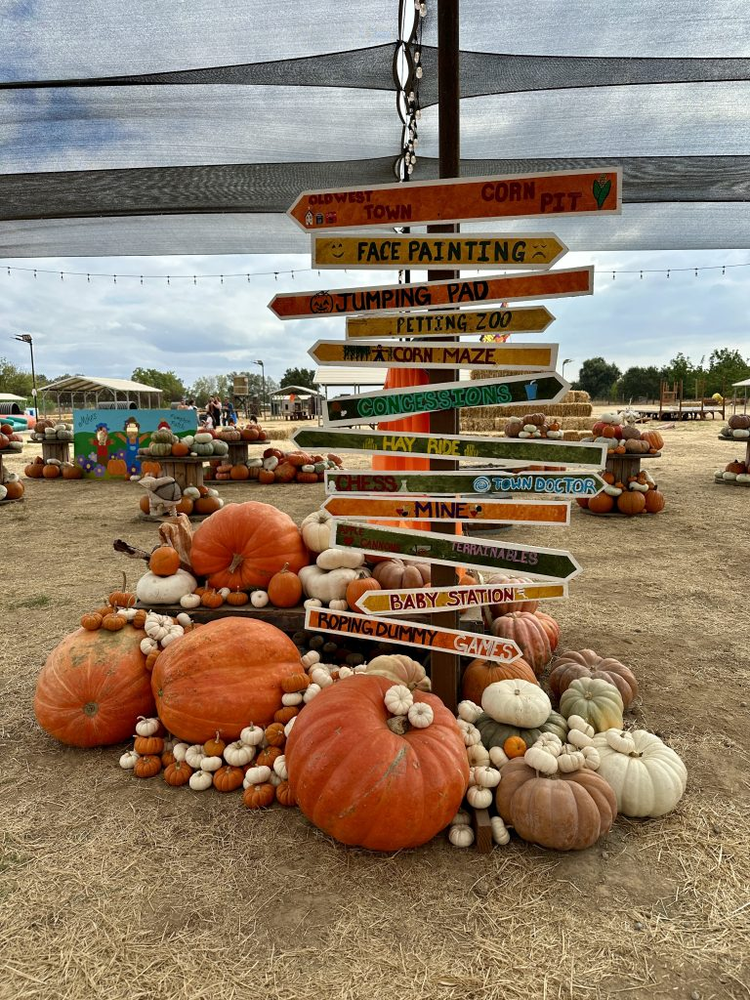
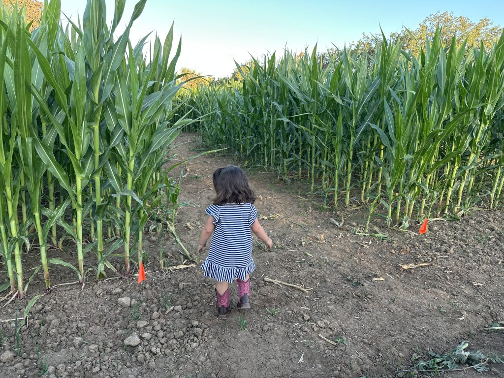
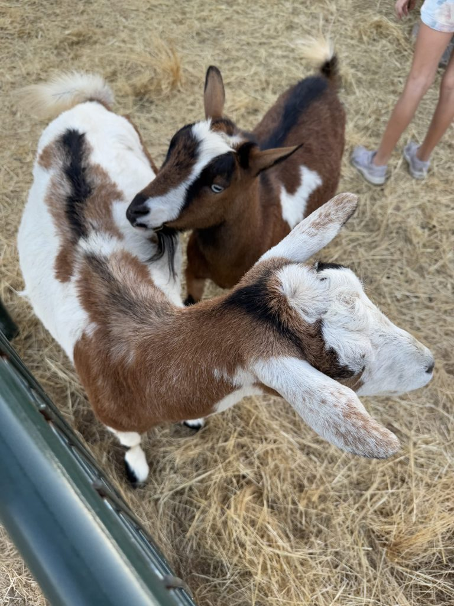
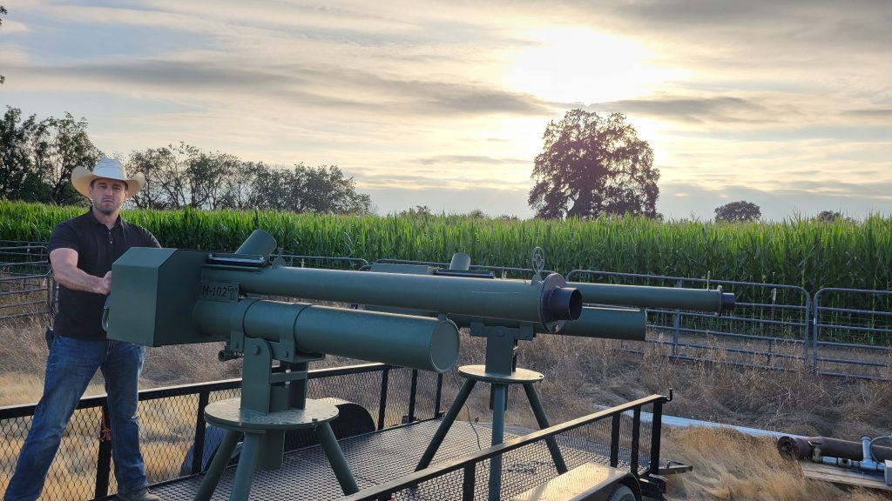
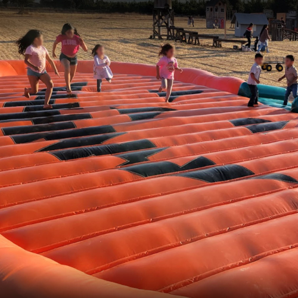
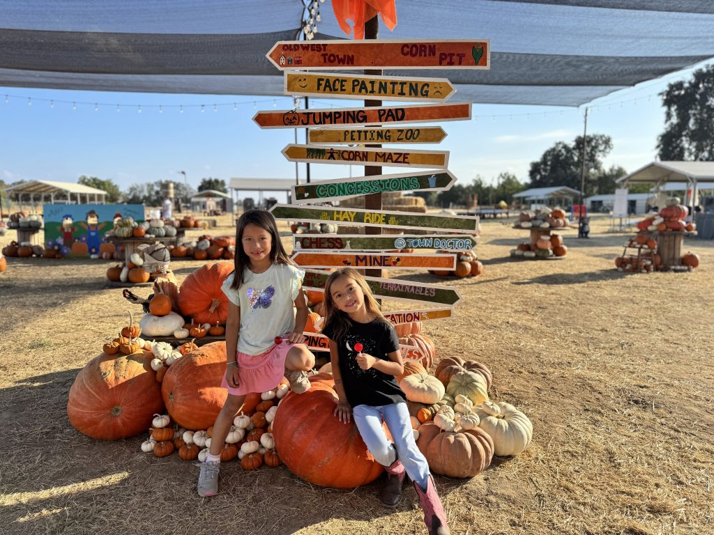
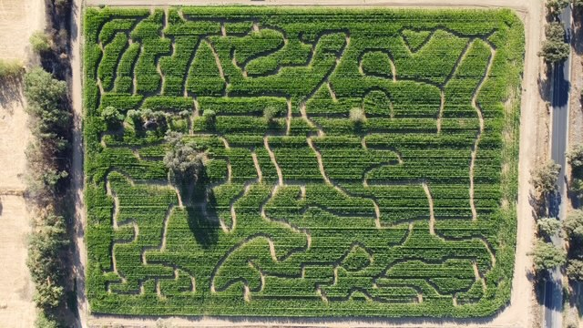

THE FALL CLASSIC
01 /
The perfect pumpkin
Big, small, or wonderfully wonky. Find the one that has your name written all over it.
Pumpkins purchased separatelyGALT, CALIFORNIA FALL, THE WAY IT SHOULD BE
Pumpkins worth picking. Adventures worth sharing.
Come make a little room for good, old-fashioned fun.

A DAY AT THE PATCH
Take the scenic route through fall. There's a little something for every kind of adventurer.
Big, small, or wonderfully wonky. Find the one that has your name written all over it.
Pumpkins purchased separately
6 ACRES OF ADVENTURETwists, turns, and teamwork in our 6-acre corn maze. A smaller maze means little feet can join in, too.
Included with admissionHop aboard for a little fresh air, a slower pace, and the simple joy of a day out on the ranch.
Included with admission
MEET THE ANIMALSMake a few furry friends at the petting zoo. Animal feed is available at an extra cost.
Petting zoo included with admission
BRING YOUR PLAYFUL SIDEHuman hamster wheels, games, and apple cannons. Bring your playful side! Cannons cost extra.
Apple cannons purchased separately
BOUNCE INTO FALLA giant pillow bouncer, hay castle, face painting, and crafts keep the smallest adventurers happy.
Included with admissionMost activities are included with admission. Pumpkins, food, vendor purchases, mining packs, animal feed, and apple cannons are extra. The good-to-knows

The good stuffWELCOME TO OUR LITTLE CORNER OF FALL
Some of the best memories start with dusty shoes, a little laughter, and no particular hurry.
At Mike's Pumpkin Patch, we bring together locally sourced California pumpkins, country adventures, friendly ranch animals, and delicious food vendors. It's a place to reconnect, explore, and enjoy being together.
Just down the road from Galt, Elk Grove, and Lodi. A world away from the everyday.
We'll see you at the patchA LITTLE LOOK AROUND
Scenes from seasons past at the ranch. Select a photo for a closer look.

Want another look? See the ranch on Google Maps (opens in a new tab)
DUST OFF YOUR BOOTS
A few good-to-knows before you head our way. Bring your people. We'll bring the pumpkins.
Call us for current opening days, hours, and weather-related updates before setting out.
209-744-6741Most adventures are included in your entrance fee, so there's more time for play and less fuss along the way.
Call for confirmed 2026 admission and pumpkin pricing. Food and select extras are sold separately.
Ask about pricingPlenty of ranch parking, with marked accessible spaces up front. Look for our signs and flags!
Get directions (opens in a new tab)Take CA-99 South to Galt. Use exit 275A for Elm Avenue and follow Elm as it becomes Orr Road for approximately 2½ miles. The patch is on your left at 9420 Orr Road.
Take CA-99 North to exit 275A for Simmerhorn Road. Turn left onto Simmerhorn, cross the freeway, then turn left onto Lincoln Way. Turn right onto Elm Avenue, which becomes Orr Road. Continue approximately 2½ miles; the patch is on your left.
TAKE THE CLASSROOM OUTSIDE
Hands-on ranch adventures, pumpkin discoveries, and a whole lot of fresh air. Let's plan a fall outing your students will be talking about all year.
BEFORE YOU COME ON OUT
Need a little more help?
We're happy to hear from you.
Most activities! Explore the old west town, pillow bouncer, corn pit, human hamster wheels, hay rides, Terrainables cart rides, hay castle, petting zoo, kids' hay maze, 6-acre corn maze, kids' corn maze, face painting, crafts, and a variety of games. Contact us to confirm availability for your visit.
Pumpkins, food and other vendor purchases, mining sand and gem packs, feed for the petting zoo animals, and apple cannons are purchased separately.
Absolutely. Our smaller corn maze, kids' hay maze, play area, hay castle, petting zoo, crafts, and face painting offer plenty to explore. Supervise children and follow posted activity rules.
Our pumpkins are locally sourced as needed from California ranches. You'll find pumpkins to take home for carving, decorating, and a little fall magic.
Yes! Contact Mike to discuss seasonal field-trip dates and customizable packages for your school. Call 209-744-6741 or email mike@mikespumpkinpatch.com to arrange your visit.
There's plenty of parking and clearly marked accessible parking spaces near the front. This is a working ranch setting, so expect dusty ground. Call ahead with specific accessibility questions.